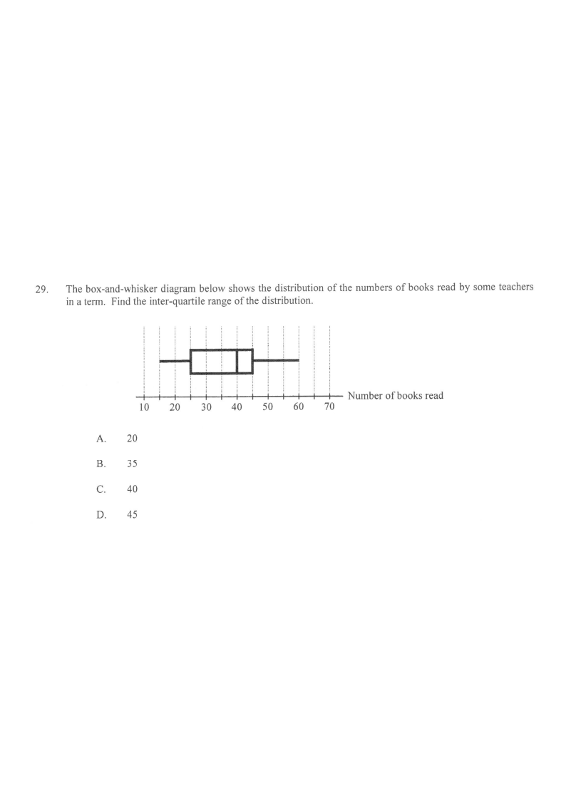

Interactive: scroll the solution to highlight each part.
Minimum = 18 · $Q_1$ = 25 · Median = 35 · $Q_3$ = 45 · Maximum = 58
[2015MC#29] 15. Statistics
The box-and-whisker diagram below shows the distribution of the numbers of books read by some teachers in a term. Find the inter-quartile range of the distribution.

Figure (original exam diagram)
A. 20
B. 35
C. 40
D. 45
STEP 1
Read the five-number summary off the diagram. The box edges give the quartiles; the line inside the box is the median.
From the scale: first quartile $Q_1 = 25$, third quartile $Q_3 = 45$.
STEP 2
Recall the definition of the inter-quartile range (IQR):
$$\text{IQR} = Q_3 - Q_1$$
The IQR measures the spread of the middle 50% of the data.
STEP 3
Substitute the values:
$$\text{IQR} = 45 - 25 = 20$$
The distance between the two box edges on the number line is 20 units.
STEP 4
Compare with the options: $20$ matches option A.
Option B (35) is the median, not the IQR — a common trap.